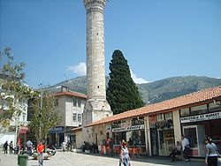
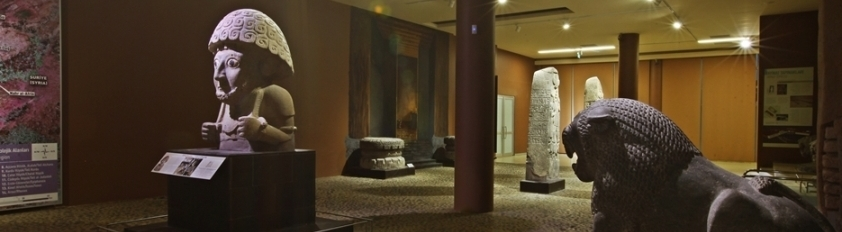
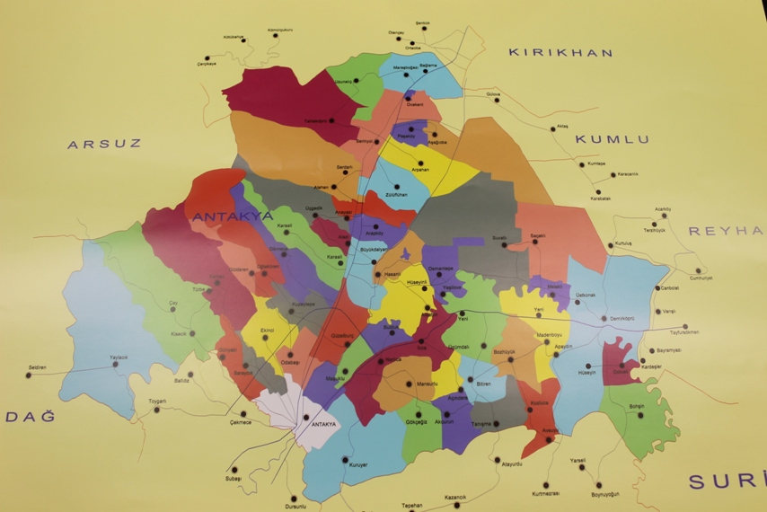
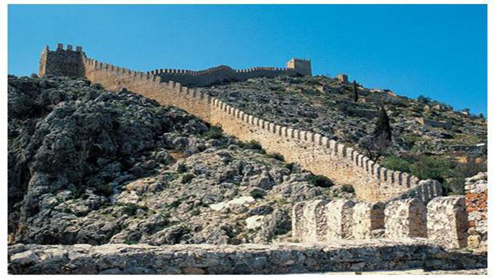
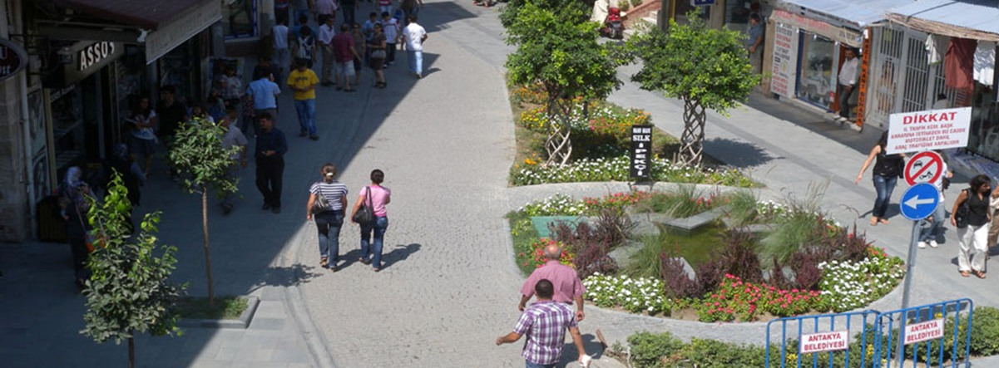
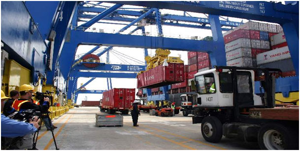

- Antakya
- Tarihçe
- Coğrafya
- Nüfus
- İklim
- Ekonomi
|  |
Ülke |
Türkiye |
| İl |
Hatay |
| Coğrafi Bölge |
Akdeniz |
| Yüzölçümü |
703 km2 |
| Rakım |
100 m |
| Posta Kodu |
31000 |
| İl Alan Kodu |
0326 |
| İl Plaka Kodu |
31 |
|  |
Hatay ve Antakya bölgesi, M.Ö. 333 yılında Büyük İskender ile Pers İmparatoru III. Dareios’un ordularının İssos kenti civarında yaptığı savaşla Makedon hakimiyetine girmiş olup, Büyük İskender’in ölümünden sonra komutanlarından Seleucus I. Nikator tarafından M.Ö. 300’lü yıllarda Antakya kenti kurulmuştur.M.Ö. 64 yılında Antakya Roma İmparatorluğuna katılmış, M.S. I. yüzyılın ilk yarısında ortaya çıkan Hristiyanlık, Kudüs dışında ilk defa Antakya’da yayılmıştır. Hz. İsa’ya inananlara ilk defa Antakya’da “Hıristiyan” adı verilmiştir. Antakya M.S. I. yüzyılda Roma ve İskenderiye’den sonra dünyanın üçüncü büyük kenti olmuştur. Antakya 638 yılında Ebu Ubeyde Bin Cerrah tarafından fethedilmiş olup, uzun süre Haçlı orduları ile Müslüman ordularının mücadelesine ve sık sık el değiştirmesine sahne olmuştur. Antakya ve çevresi sonuçta 1516 yılında Yavuz Sultan Selim’in Mısır seferi sırasında Osmanlı hakimiyetine girmiş, I. Dünya Savaşı’nı Osmanlı Devleti ile İtilaf Devletleri arasında bitiren Mondros Antlaşmasından sonra Kasım 1918’de Fransızlar tarafından işgal edilmiştir. Uzun mücadele ve uğraşlar sonucunda 2 Eylül 1938’de Hatay Devleti kurulmuş, 29 Haziran 1939’da Hatay Millet Meclisi son toplantısını yaparak kendini feshetmiş ve Türkiye Cumhuriyeti’ne katılma kararı almıştır. 23 Temmuz 1939’da da son Fransız askeri Antakya’yı terk ederek Hatay’ın (Antakya) kurtuluşu gerçekleşmiştir. |
İlçemiz; Hatay İlinin merkezinde olup, doğusunda Reyhanlı ve Kumlu, batısında Samandağ ve Arsuz, güneyinde Defne ve Altınözü, kuzeyinde Belen İlçeleriyle sınır komşusudur. Tepelerin zirvelerine tırmanarak kenti çepeçevre saran sur kalıntıları ve kalesiyle kentin adeta simgesi olan ve eteklerinde Antakya'nın kurulu olduğu Habib-i Neccar Dağı, kenti güneybatı-kuzeydoğu istikametinde sınırlayan bir dizi tepelerin oluşturduğu doğal bir engeldir. Antakya’nın ortasından geçen ve ovanın kurutulması çalışmaları sırasında nehir yatağının kentin içinden geçen kısmı ıslah edilerek düzgün bir kanal haline getirilmiş, Antik Çağ’ın Orontes’i olan günümüzün Asi Nehri’nin kaynağı, Lübnan Dağlarıdır. Amanoslar ile Kel Dağı arasında bir yatak oluşturan Asi Nehri’nin toplam uzunluğu 380 km olup, nehrin büyük bölümü Suriye toprakları içinde bulunmaktadır. Kuzey yönünde yaklaşık 30 km. boyunca Türkiye-Suriye sınırını oluşturacak şekilde akan Asi Nehri, topraklarımıza girdikten sonra Batıya döner, yaklaşık 40 km sonra Samandağ’ın güneyinde bir delta oluşturarak Akdeniz’e kavuşur. Antik çağda küçük tonajlı nehir gemilerinin seyrüseferine imkân veren ve Antakya’yı asırlar boyu Akdeniz’e bir su yolu ile bağlamıştır. Hacı Kürüş Deresi ile Güneybatıdaki Hamşen Deresi Habib-i Neccar Dağından doğarak Asiye doğru akan iki önemli su yatağıdır. Amik Ovasında, yakın zamanlara kadar Amik Gölü adı ile bilinen bir göl vardı. Ancak uzunluğu 16 km. genişliği 10 km. olan gölün ve göl çevresindeki bataklıklarla beraber 310 km2 yi bulan arazinin bir bölümünün kurutulması ile göl kayboldu. DSİ tarafından yürütülen ve 1955 yılında başlayıp 1980 yılında tamamlanmış olan kurutma işlemi sonucunda elde edilen zirai verimi yüksek topraklar çiftçilere dağıtılarak tarıma açılmıştır. |
 |
|  |
|  |
Anadolu'nun güneyinde, Türkiye Cumhuriyeti'nin sınır vilayetlerinden biri olan Hatay ilinin yönetim merkezi Antakya, 36 10' kuzey enlemi ve 36 06' doğu boylamı ile yurdumuzun en güneyinde yer alan kent niteliğindeki yerleşme merkezidir. İlçe nüfusunun yıllar içinde değişimi tablodaki gibidir:
| Yıl |
Toplam |
Şehir |
Kır |
| Antakya merkez ilçesi |
| 2014 |
354.768 |
354.768 |
veri yok |
| 2013 |
347.974 |
347.974 |
veri yok |
| 2012 |
470.833 |
216.960 |
253.873 |
| 2011 |
464.947 |
213.296 |
251.651 |
| 2010 |
461.477 |
213.581 |
247.896 |
| 2009 |
445.381 |
202.216 |
243.165 |
| 2008 |
427.451 |
188.310 |
239.141 |
| 2007 |
415.310 |
186.243 |
229.067 |
| 2000 |
345.320 |
144.910 |
200.410 |
| 1990 |
284.195 |
123.871 |
160.324 |
| 1985 |
247.349 |
107.821 |
139.528 |
| 1980 |
205.345 |
94.942 |
110.403 |
| 1975 |
179.648 |
77.518 |
102.130 |
| 1970 |
151.545 |
66.520 |
85.025 |
| 1965 |
128.412 |
57.855 |
70.557 |
|
| 2012 sonrasında Antakya ilçesi, Antakya ve Defne ilçeleri olmak üzere 2'ye ayrılmıştır. Bu nedenle 2013 nüfus değerinde düşüş olmuştur. |
| Antakya ve civarında Akdeniz iklim tipi egemendir. Bu nedenle kentte yazlar sıcak ve kurak, kışlar ılık ve yağışlı geçer. Ancak, kıyı şeridi ile dağların arka kısımları ve yükseltisi fazla olan yerler arasında iklim koşullarındaki bölgesel farklar nedeniyle Antakya'daki iklim koşulları kıyı şeridine kıyasla biraz farklılık gösterir. Bu nedenle sıcaklık, kıyılarda yüksek değerlerde kalır. Yazların, kıyı şeridine kıyasla daha serin geçmesinin bir nedeni de en sıcak ortalamaların kaydedildiği ayların aynı zamanda, Antakya'da rüzgarın en hızlı estiği ve en çok esme sayısına ulaştığı aylar oluşudur. |
|  |
| Antakya ekonomisinde en belirgin özellik ve etkinlik ticarettir. Gerek bir sınır kenti olması, gerekse girişimci insanı sayesinde Antakya bir ticaret merkezi konumundadır. Antakya bu özelliğiyle nüfusunu gündüzleri ikiye katlamakta, çok canlı ve hareketli bir yapıya kavuşmaktadır. Amik Ovasının tarımsal ürün ve potansiyeli Antakya’da değerlendirilmekte, tarım ve tarıma dayalı sanayi ile tarımsal makine imalatı önemli bir ekonomik faaliyet olmaktadır. Ayrıca Antakya’da el sanatları, dericilik, ayakkabıcılık ve mobilya sanayisi de gelişmiş durumdadır. Antakya ve Hatay ulaştırma sektöründe Türkiye’de İstanbul’dan sonra en büyük araç potansiyeline sahip olup, kara yolcu ve yük taşımasında söz sahibi bir konumdadır. |
|

|

|
|
|